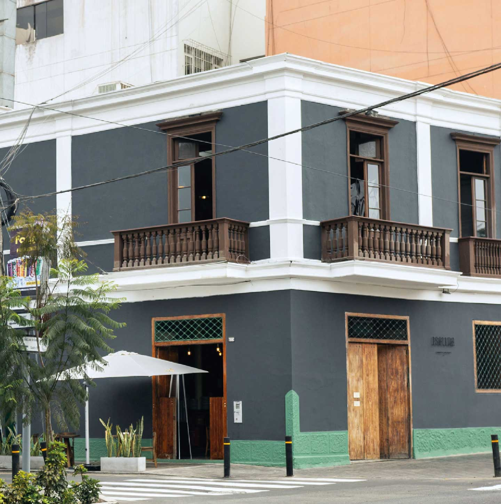

Le rendimos un homenaje al espíritu y a los sabores de nuestras queridas tabernas de antaño. También, a esa cocina peruana de casa, a las recetas que se apuntaban en cuadernos y poco a poco fueron olvidados en algún lugar de la casa. Estamos en una casa construida en 1906, la cual refleja el espíritu de una cocina llena de recuerdos, y que busca hacer las cosas como antes. Renovamos este espacio y lo convertimos en un ambiente distendido para comer, tomar y pasarla bien. Isolina Taberna Criolla, es nuestro hogar donde se celebran las risas espontáneas y la libertad de comer como cada uno desee. ¡Te esperamos!
